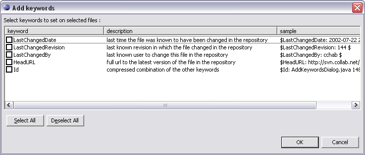

This dialog is accessed via the menu or the context menu option in the SVN Properties View.
Keywords in SVN are used to embed versioning information into files that are under version control. These keywords (like for instance, 'Id') are expanded for resources that are marked as using them, and this is what the "Add keywords" action does. The action will set the svn:keywords property on the selected files. This tells SVN to look for an expand those keywords in the file. Of course, it is up to you to include the keyword in the file in the place you want it to appear.

Select the resources that need keywords added - this may be a folder in which case all the contained (child) resources are also affected - and choose from the Team menu.
Check the keywords to associate with the selected resource(s). To use the keyword in a (text) file, enclose it in $-signs, as in $Id$.
Related Tasks
None
Related Reference